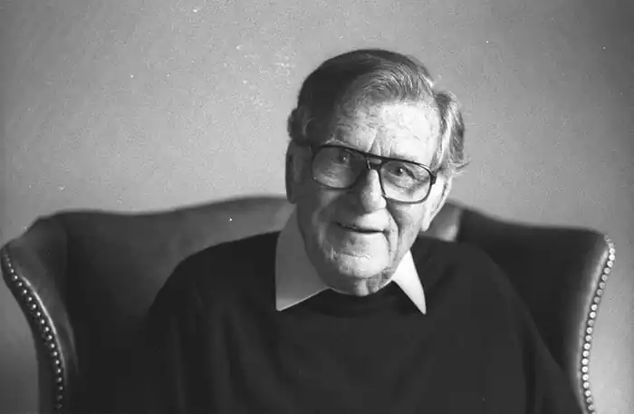

МОРРІС ЛЕНГЛО УЕСТ народився в Сент-Кілді, Мельбурн, у 1916 році. У віці чотирнадцяти років він вступив до семінарії Християнських Братів, щоб сховатися від важкого дитинства. Він навчався в Мельбурнському університеті та працював учителем. У 1941 році він залишив Християнських Братів, не склавши остаточних обітниць. Під час Другої світової війни Уест працював дешифрувальником, а деякий час був особистим секретарем колишнього прем'єр-міністра Біллі Хьюза.
Після війни Уест став успішним письменником і продюсером радіосеріалів. У 1955 році він покинув Австралію, щоб вибудувати міжнародну кар'єру письменника, і проживав зі своєю родиною в Австрії, Італії, Англії та США. Вест також деякий час працював кореспондентом британської газети "Дейлі Мейл" у Ватикані. До Австралії він повернувся в 1982 році.
Морріс Уест написав 30 книг і багато п'єс, а кілька його романів були екранізовані. Його книги були опубліковані 28 мовами та продані тиражем понад 70 мільйонів примірників по всьому світу. Кожна нова книга, яку він написав після того, як став відомим письменником, продавалася тиражем понад один мільйон примірників. За свою довгу письменницьку кар'єру Вест отримав багато нагород та відзнак, зокрема Меморіальну премію Джеймса Тейта Блека та премію В. Х. Хайнемана Королівського літературного товариства за роман "Адвокат диявола". У 1978 році його було обрано членом Всесвітньої академії мистецтв і наук. У 1985 році його було призначено членом Ордена Австралії (AM), а в 1997 році — офіцером Ордена (AO).